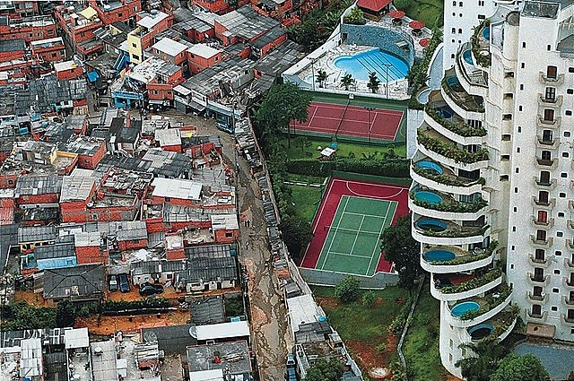
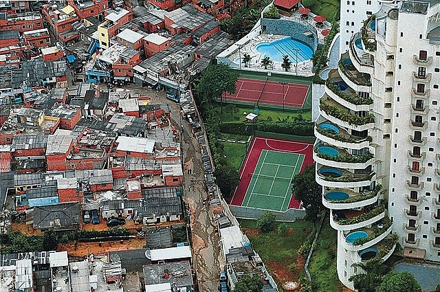

New Realities to Face
It would be nearly impossible to claim that the world we know and live in today is not constantly changing. Simultaneously, as technologies and human actions happen and emerge, nature and the biosphere are undergoing drastic transformations. One could argue that these changes occur in natural cycles, but what we observe is a lack of commitment, where humanity acts and, at times, destroys, primarily due to human behaviors throughout this process. This leads to the question, "What will we do to improve coexistence and care for the Earth as a whole?" In 2012, a United Nations Conference was held in Rio de Janeiro to discuss and explore hypotheses and the renewal of global political commitments with a focus on sustainability.
Today, within a set of proposals made by the UN, 27 points have been identified that must be achieved and implemented by 2030, forming a set of actions called Sustainable Development Goals (SDGs) in Brazil. These goals cover various aspects, each considered equally important within its scope. In this text, we will address only five of them to work in an integrated and interconnected manner. The chosen SDGs, among the 17 proposed, are:
ONU and its2030 SDGs
Eradication of poverty
Zero hunger and sustainable agriculture

Health and well-being

Quality education

Reduction of inequalities
These were selected and mentioned because, among them, a common thread can be found, something that intertwines them. Some fronts are interdependent or even codependent on each other. For instance, poverty, zero hunger, reduction of inequality, quality education, health, and well-being are interconnected. In this context, achieving one of the proposed goals automatically addresses and improves other fronts of the causes to be addressed.
For example, the eradication of poverty ensures that individuals have a reasonable income to access better-quality food, addressing a significant initial issue – hunger. Additionally, increased income contributes to higher consumption levels, narrowing the gap of social inequality and poverty.
A topic discussed in class was the origin of merit. In the context of Social Inequality dynamics, meritocracy can play a role. The Brazilian series "3%," available on Netflix, explores this theme. It portrays a dystopian future where poverty and the elite are separated by a sea. At the age of 20, every young person has a chance, only once, to take a test that can take them from the normal world full of poverty, violence, and inequality to a distant and separated elite, called Mar Alto. However, only 3% can pass the test. The series raises the question of the extent to which individuals would go to achieve what they desire. Would effort, initiative, and talent be sufficient, or does it reflect an inherent and endless cruelty and inequality, benefiting only the strongest and most egocentric?
Another theme, proposed among the Sustainable Development Goals, emphasizes that every population deserves a minimum level of social well-being, good health, and quality education, provided by the government as basic rights. A well-established state not only can but should meet the requirements of quality basic health and education for every citizen.
In conclusion, these were just introductory fronts highlighted in our text, aiming for a better quality of life and a reduction of inequality for people of different social classes. It emphasizes the need for each state to address and intervene in the general problems of its society, working collaboratively to make government policies more participative and active in the social causes exemplified here.
According to Milton Santos, an eminent Brazilian geographer and thinker, education plays a strong and fundamental role, crucial in shaping each citizen throughout their life. Education goes beyond formal schooling; it also involves consciousness, fostering an emancipatory character and thought, creating a society better equipped to deal with and improve the world's general problems.
Regarding health, Milton also suggests that, in addition to basic health, there is a need for public policies to address the demand and strive for a more egalitarian character, especially for those at risk, such as people lacking basic amenities and sanitation, living in homelessness, for example.
Today, to assist with health and education demands, as well as hunger, industries ranging from large to medium-sized employers use various technological tools (such as biotechnology) to propose improvements in these demands. However, focusing solely on profit and neglecting the actual demand may lead to adverse outcomes. For instance, technological advancements in agriculture may increase yield, but the distribution of these foods is not always equitable, often prioritizing profit over equal distribution, resulting in significant waste. It does not happen only in food sector, because we can find it in another ones that final profit comes by on the right distribuition, causing besides inequality, also leaching of a exaggereted consumption, resulting a environmental waste, such as plastic, non-renewable materials, clothing, etc. What then would be the real proposal of a digital mindset that, in its final chain, views these elements as remnants of its fraction?
In any case, we can view this disparity as an indication that we need, not only for these but for all other Sustainable Development Goals constantly, a drastic change in attitudes and movement towards interconnection. This involves the creation of action fronts (curatorship) to recreate what is lost but also to be open to the new, where artificial intelligence and other digital parameters are focused on helping and improving the global quality of life.
ONU and its 2030 SDGs
Our team
Members who contributed to the preparation of this work:
Our team
Ana Flávia Mastrangelo
12522165464
Felipe Sousa Nunes
42320510
Henrique Mendes Queiroz
125221104211
Letticia Edner Ferreira
12522189035
Nathily da Silva Santos
125221100637
Raquel da Silva Santos
125221104208
Thiago Edwin André Orbegozo Valle
12522221905